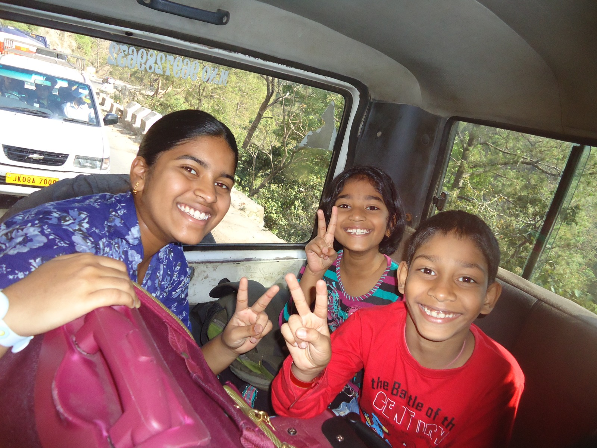

The Ultimate Packing Guide for Vaishno Devi

I recently visited the holy shrine of Shri Vaishno Mata Devi with my cousin and it was one of the best trips ever.There's something about going to holy places with your extended fam that makes it even more special.We hopped on to a Force car and made our way through the dusty roads , passing by devotees and horses.But my bag seemed to be devoid of some essentials and to help you guys not make the same mistake here is my blog...
Click to know more